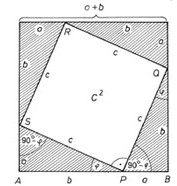
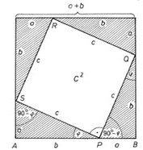

A Pitagorasz-tétel és bizonyítása
A derékszögű háromszög
Ha egy háromszögről azt mondjuk, hogy derékszögű, akkor ezzel egy adatát megadtuk. A háromszög meghatározásához ezenkívül már csak két további adatra van szükségünk.
A derékszögű háromszög oldalai között az általános háromszögre vonatkozó már említett tulajdonságon túl még szorosabb kapcsolat van. A közöttük levő összefüggést Pitagorasz-tételnek nevezzük. A korábbi években már megismertük ezt a tételt.
A Pitagorasz-tétel
Derékszögű háromszögben a két befogó négyzetének összege egyenlő az átfogó négyzetével. (A befogó négyzetén, az átfogó négyzetén a megfelelő szakaszhosszak négyzetét értjük.)

A Pitagorasz-tétel bizonyítása
A Pitagorasz-tételnek egyik egyszerű bizonyítási módja az, amelynek alapgondolata: egyenlő területekből azonos nagyságú területeket elvéve, a maradék területek is egyenlő nagyságúak.
- Vegyünk két négyzetet, mindkettő oldalhossza legyen a + b. Ezeket bontsuk részekre az ábrán látható módon.
- A felső négyzetet gondolatban feldaraboltuk négy darab olyan derékszögű háromszögre, amelyek befogói a és b. Ezek azonos méretűek. Az átfogójuk is azonos hosszúságú, jelöljük c-vel. Ezenkívül két négyzetet kaptunk, az egyik a2, a másik b2 területű.
- Az előző "nagy" négyzettel azonos területű alsó négyzetet öt részre daraboltuk. Ebből négy olyan derékszögű háromszög, amilyent az előző felbontásnál kaptunk. Befogóik a és b, átfogójuk c.
- Ha mindkét "nagy" négyzetből elvesszük a minden méretében azonos (csak más helyzetű) négy-négy derékszögű háromszöget, akkor a maradék területeknek is egyenlőknek kell lenniük.
- A felső "nagy" négyzetből két "kis" négyzet marad, ezek együttes területe a2 + b2.
- Az alsó "nagy" négyzetből marad a középső négyszög. Ennek minden oldala c. Minden szöge 90°, mert (például) az AB oldal P pontjánál lévő nagyságát megkapjuk, ha az egyenesszögből elvesszük a derékszögű háromszög két hegyesszögének összegét, azaz 90°-ot. Mivel a négyszög minden oldala egyenlő és minden szöge 90°, a maradék négyszög is négyzet. Területe c2.
- A kétféle módon kapott maradékterületek egyenlő nagyságúak. Ezért a2 + b2 = c2.
 
